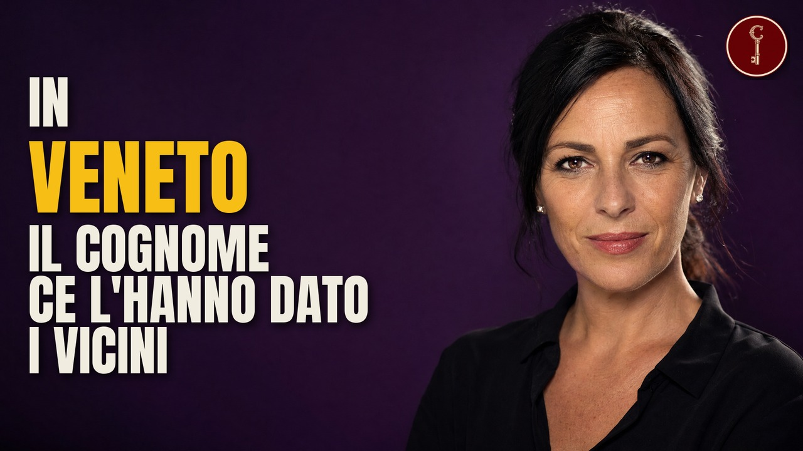

Veneto
Il VENETO raccontato da 26 cognomi: scopri le loro storie

Guarda il video su YouTubeFonti della ricerca
- La Nuova Venezia, Cognomi: Vianello resiste in vetta (anagrafe del Comune di Venezia, 2019)
- La Nuova Venezia, Chioggia, la città dove l'anagrafe è un labirinto (2011)
- l'Unità, 30/08/2010, Chioggia e i detti
- Wikipedia, Marcantonio Trevisan
- Wikipedia, Carraro (azienda)
- Wikipedia, Lingua pavana (Ruzante; Galileo, Dialogo de Cecco di Ronchitti, 1605)
- Wikipedia, Pellestrina (guerra di Chioggia, ricostruzione del 1° luglio 1380, sestieri)
- Venezia Unica / Comune di Venezia, Viaggio a Pellestrina (sestieri Scarpa, Zennari, Vianelli, Busetti; famiglie mandate dal podestà di Chioggia)
- Erla Zwingle, iamnotmakingthisup.net (soprannomi e posta a Pellestrina)
- Archivio di Stato di Vicenza, testamento di Cattarina Visentin, 1 novembre 1640
- Wikipedia, Patria del Friuli (annessione alla Repubblica di Venezia, 1420)
- Archivio di Stato di Udine, inventario del fondo Fabris
- Surnames in Italy, Masero/Masiero (De Felice: masièr, masoè, Masoero)
- Wikipedia, Paolo Veronese
- Archivio di Stato di Vicenza, testamento di Giuseppe Veronese, 1696
- Forum Editrice, La fucina Del Favero a Perarolo di Cadore
- Wikipedia, Perarolo di Cadore (confluenza Boite-Piave, fluitazione)
- Wikipedia, Schiavon (toponimo, 1146, 1404)
- Wikipedia, Riva degli Schiavoni
- Zambon, storia del gruppo (fonte aziendale)
- Surnames in Italy, Zan/Zamboni (Giambono)
- Veneti market gardeners 1927, A different Veneto story (storia orale della famiglia Bonato)
- Wikipedia, Giovanni Volpato
- Wikipedia, Domini di Terraferma (Brescia 1426, Bergamo 1428, fino al 1797)
- Wikipedia, Lovato Lovati e Tomb of Antenor
- Etymonline, zany (dallo Zanni della commedia dell'arte, anni 1580)
- Wikipedia, Marino Zorzi (doge 23 agosto 1311 - 3 luglio 1312)
- Wikipedia, Zorzi (Bodonitsa 1335-1414)
- Wikipedia, Sette Comuni (federazione 1310; cimbro; Caldogno)
- Wikipedia, Leonardo Donato (doge dal 10 gennaio 1606; interdetto; Gesuiti rientrati nel 1655)
- Wikipedia, Campanile di San Marco (Marangona, Canciani 1819-1820, crollo del 14 luglio 1902)
- Scuola Grande di San Rocco, Giovanni Marchiori
- Christie's, Giovanni Marchiori (Caviola d'Agordo 1696 - Treviso 1778)
- Wikipedia, Domenico Marchiori (Lendinara 1828)
- Wikipedia, Aldo Ballarin
- Wikipedia, Dino Ballarin (al Torino nel 1947, morto a Superga; stadio di Chioggia intitolato nel 1950)
- Wikipedia, Tragedia di Superga (ritorno da Lisbona, 4 maggio 1949)
- Wikipedia, Repubblica di Venezia (fine nel 1797)
- INSEE, Fichier des noms (nascite per cognome e decennio, 1891-2000), licence ouverte
- NARA, Italians to America 1855-1900 (Frigo: 29 arrivi)
- Wikipedia, il cognome Lovato
- Boglewood, il cognome Bressan
- Italian Genealogy, il cognome Bressan
- Paese.app, il cognome Zanatta
- Isole linguistiche, il cognome Frigo
- Paese.app, il cognome Frigo
- Surnames in Italy, il cognome Frigo
- Erla Zwingle, iamnotmakingthisup.net, il cognome Zennaro
- Surnames in Italy, il cognome Zennaro
- Lucas Italy, il cognome Marangon
- Surnames in Italy, il cognome Marchiori
- Geneanet, il cognome Favero
- Surnames in Italy, il cognome Zambon
- Archivio di Stato di Vicenza, il cognome Bonato
- Italianismo, il cognome Trevisan
- Surnames in Italy, il cognome Trevisan
- Paese.app, il cognome Carraro
- Surnames in Italy, il cognome Pavan
- Italianismo, il cognome Furlan
- Wikipedia, il cognome Fabris
- NARA, Italians to America Passenger Data File 1855-1900 (NAID 1746097), pubblico dominio
- U.S. Census Bureau, Frequently Occurring Surnames 2010 e 2020 (cognomi con >= 100 portatori), pubblico dominio
- INSEE, Fichier des noms (nascite per cognome e decennio, 1891-2000), licence ouverte
- INE (Spagna), Apellidos con frecuencia >= 100 come primo cognome, Censo de población 1/1/2025
- Istat, Popolazione residente per età, sesso e stato civile al 1° gennaio 2025 (demo.istat.it), CC BY 4.0
- Fondazione Migrantes, Rapporto Italiani nel Mondo 2025, allegati socio-statistici, elaborazione su dati AIRE e Istat
- NARA, Numerical Identification Files (NUMIDENT) — Application (SS-5) Files 1936-2007, RG 47, pubblico dominio; solo persone decedute entro il 2007 (o nate prima del 1897)
- Museu da Imigração do Estado de São Paulo / Arquivo Público do Estado de São Paulo — Registros de matrícula della Hospedaria dos Imigrantes (San Paolo, Brasile), acervo digital
Attribuzioni di immagini e video
Hospedaria dos Imigrantes - São Paulo - 20240601130526
Joalpe · CC BY-SA 4.0

Joalpe · CC BY-SA 4.0
Piazza dei Signori e Palazzo dei Trecento
Didier Descouens · CC BY-SA 4.0

Didier Descouens · CC BY-SA 4.0
Padua - Prato della Valle
Didier Descouens · CC BY-SA 4.0

Didier Descouens · CC BY-SA 4.0
Canal Grande Chiesa della Salute e Dogana dal ponte dell Accademia
This Photo was taken by Wolfgang Moroder. Feel free to use my photos, but please mention me as the author and se · CC BY-SA 3.0

This Photo was taken by Wolfgang Moroder. Feel free to use my photos, but please mention me as the author and se · CC BY-SA 3.0
Caldogno - Villa Caldogno - 2023-09-21 07-08-55 001
Etty81jt · CC BY-SA 4.0

Etty81jt · CC BY-SA 4.0
Venice, Palazzo Ducale, Sala del Mag. Consiglio, ceiling 1
Armin Kleiner · CC BY-SA 4.0

Armin Kleiner · CC BY-SA 4.0
Artista italiano, marcantonio trevisan, doge di venezia, 1554
sailko · CC BY-SA 3.0

sailko · CC BY-SA 3.0
Interior of San Francesco della Vigna (Venice) - Monument to Marcantonio Trevisan - Girolamo Campagna
Didier Descouens · CC BY-SA 4.0
_-_Monument_to_Marcantonio_Trevisan_-_Girolamo_Campagna.jpg){kind=link}
Didier Descouens · CC BY-SA 4.0
Hospedaria dos Imigrantes - São Paulo - 20240601122015
Joalpe · CC BY-SA 4.0

Joalpe · CC BY-SA 4.0
Mirano - Biblioteca Comunale di Mirano - 2025-09-25 17-58-45 001
Luca.favorido · CC BY-SA 4.0

Luca.favorido · CC BY-SA 4.0
Via Antoniana, p.za Europa, chiesa S. Maria Ass.ta e Municipio (Campodarsego)
Threecharlie · CC BY-SA 4.0

Threecharlie · CC BY-SA 4.0
Villa Ottoboni (Padova)
Mrc.nalon · CC BY-SA 4.0
.jpg){kind=link}
Mrc.nalon · CC BY-SA 4.0
Palazzo Bo sala dei 40 cattedra Galileo - Wikigita Padova 16 settembre 2022 f23
Marco Chemello (Wikimedia Italia) · CC BY-SA 4.0

Marco Chemello (Wikimedia Italia) · CC BY-SA 4.0
Aerial image of Chioggia (view from the south)
Carsten Steger · CC BY-SA 4.0

Carsten Steger · CC BY-SA 4.0
Chioggia - Scorcio 01
Syrio · CC BY-SA 4.0

Syrio · CC BY-SA 4.0
Chioggia - Scorcio 02
Syrio · CC BY-SA 4.0

Syrio · CC BY-SA 4.0
Chioggia - Scorcio 04
Syrio · CC BY-SA 4.0

Syrio · CC BY-SA 4.0
Palazzetto Foscari Canal Grande Venezia
This Photo was taken by Wolfgang Moroder. Feel free to use my photos, but please mention me as the author and se · CC BY-SA 3.0

This Photo was taken by Wolfgang Moroder. Feel free to use my photos, but please mention me as the author and se · CC BY-SA 3.0
Aerial image of Pellestrina (view from the southwest)
Carsten Steger · CC BY-SA 4.0

Carsten Steger · CC BY-SA 4.0
Venezia Palazzo Ducale Innen Sala del Maggior Consiglio 07
Zairon · CC BY-SA 4.0

Zairon · CC BY-SA 4.0
L00 296 Pellestrina
Falk2 · CC BY-SA 4.0

Falk2 · CC BY-SA 4.0
Ferruccio Vianello Pellestrina (1)
MOs810 · CC BY-SA 4.0

MOs810 · CC BY-SA 4.0
L00 321 Pellestrina, Flutschutzmauer
Falk2 · CC BY-SA 4.0

Falk2 · CC BY-SA 4.0
Retrone and clock tower of Basilica Palladiana. Vicenza, Italy
Ввласенко · CC BY-SA 3.0

Ввласенко · CC BY-SA 3.0
Basilica Palladiana (Vicenza) - facade on Piazza dei signori
Didier Descouens · CC BY-SA 4.0
_-_facade_on_Piazza_dei_signori.jpg){kind=link}
Didier Descouens · CC BY-SA 4.0
Panorama of Canal Grande and Ponte di Rialto, Venice - September 2017
Martin Falbisoner · CC BY-SA 4.0

Martin Falbisoner · CC BY-SA 4.0
San Bartolomeo Apostolo (Salzano)
Ciaurlec · CC BY-SA 4.0

Ciaurlec · CC BY-SA 4.0
Panorama notturno di Verona
Luca Casartelli · CC BY-SA 2.0

Luca Casartelli · CC BY-SA 2.0
Aerial picture of Verona
Guglielmo Giambartolomei · CC BY-SA 4.0

Guglielmo Giambartolomei · CC BY-SA 4.0
Lozzo Ateestino visto da Monte Lozzo. 02
Threecharlie · CC BY-SA 4.0

Threecharlie · CC BY-SA 4.0
Venezia Canal Grande R04
Marc Ryckaert (MJJR) · CC BY 3.0

Marc Ryckaert (MJJR) · CC BY 3.0
Vicenza Basilica Palladiana 003
Zairon · CC BY-SA 4.0

Zairon · CC BY-SA 4.0
Hospedaria dos Imigrantes - São Paulo - 20240601122039
Joalpe · CC BY-SA 4.0

Joalpe · CC BY-SA 4.0
Fiume Piave - Santo Stefano di Cadore, Belluno, Italia - 5 Agosto 2026 04
Giorgio Galeotti · CC BY-SA 4.0

Giorgio Galeotti · CC BY-SA 4.0
VallediCadore
https://www.flickr.com/photos/navin75/ · CC BY-SA 2.0

https://www.flickr.com/photos/navin75/ · CC BY-SA 2.0
Italia Belluno - Valle di Cadore river Boite IMG 8347
Bjoertvedt · CC BY-SA 4.0

Bjoertvedt · CC BY-SA 4.0
Fiume Piave-Boite
Nicolaesse · CC BY 2.5

Nicolaesse · CC BY 2.5
Cibiana di Cadore 2
kallerna · CC BY-SA 4.0

kallerna · CC BY-SA 4.0
Perarolo di Cadore
Vaghestelledellorsa · CC BY-SA 3.0

Vaghestelledellorsa · CC BY-SA 3.0
K00 079 Adriamagistrale, Abzw Vrulja
Falk2 · CC BY-SA 4.0

Falk2 · CC BY-SA 4.0
Pinacoteca Querini Stampalia - Passeggio sulla riva degli schiavoni - Gabriele Bella
Didier Descouens · CC BY-SA 4.0

Didier Descouens · CC BY-SA 4.0
Riva Ca' di Dio in Venice
AnatolyPm · CC BY-SA 4.0

AnatolyPm · CC BY-SA 4.0
Riva degli Schiavoni, Venice 001
Moonik · CC BY-SA 3.0

Moonik · CC BY-SA 3.0
Schiavon chiesa
Pottercomuneo · CC BY-SA 4.0

Pottercomuneo · CC BY-SA 4.0
J. Carter da Samuel Prout (1830) Market Square in Padua
Soulman9966 · CC BY 4.0

Soulman9966 · CC BY 4.0
Marostica vista da Pianezze
Syrio · CC BY-SA 4.0

Syrio · CC BY-SA 4.0
Riva degli Schiavoni Pasqua a Venezia
This Photo was taken by Wolfgang Moroder. Feel free to use my photos, but please mention me as the author and se · CC BY-SA 3.0

This Photo was taken by Wolfgang Moroder. Feel free to use my photos, but please mention me as the author and se · CC BY-SA 3.0
Monument to Andrea Palladio (Vicenza)
Didier Descouens · CC BY-SA 4.0
.jpg){kind=link}
Didier Descouens · CC BY-SA 4.0
Il Palazzo dei Trecento dopo i bombardamenti
Maddalena Addeo · CC BY-SA 4.0

Maddalena Addeo · CC BY-SA 4.0
Adige a Verona2
Adert · CC BY-SA 4.0

Adert · CC BY-SA 4.0
Bassano del Grappa 115 (8187952255)
Alain Rouiller · CC BY-SA 2.0

Alain Rouiller · CC BY-SA 2.0
Ambiente Bassano del Grappa incontaminato - Costanza Cataudella ENTER 2019
Team ENTER · CC BY-SA 4.0

Team ENTER · CC BY-SA 4.0
Mura venete di Bergamo 3
Nazasca · CC BY-SA 4.0

Nazasca · CC BY-SA 4.0
BG MuraVenete 05
Ago76 · CC BY-SA 4.0

Ago76 · CC BY-SA 4.0
View down Adda River from Visconti castle, Trezzo sull'Adda, Italy
Daniel Case · CC BY-SA 3.0

Daniel Case · CC BY-SA 3.0
Panorama Gorizia (tramonto)
T137 · CC BY-SA 3.0

T137 · CC BY-SA 3.0
Mura Venete (Bergamo)
Radosław Botev · CC BY 3.0 pl
.jpg){kind=link}
Radosław Botev · CC BY 3.0 pl
L08 195 Padua, Piazza Antenore
Falk2 · CC BY-SA 4.0

Falk2 · CC BY-SA 4.0
Padova, 2009 (01)
Draceane · CC BY-SA 4.0

Draceane · CC BY-SA 4.0
Piazza Antenore - Tomba di Antenore - panoramio
Mister No · CC BY 3.0

Mister No · CC BY 3.0
Tomba di Antenore jm56302
joergens.mi · CC BY-SA 3.0

joergens.mi · CC BY-SA 3.0
Padova flickr01
pikkus · CC BY-SA 2.0

pikkus · CC BY-SA 2.0
Tomba di Antenore jm56282
joergens.mi · CC BY-SA 3.0

joergens.mi · CC BY-SA 3.0
Tomba di Antenore jm56286
joergens.mi · CC BY-SA 3.0

joergens.mi · CC BY-SA 3.0
Tomba di Antenore jm56292
joergens.mi · CC BY-SA 3.0

joergens.mi · CC BY-SA 3.0
L08 197 Padua, Tomba di Lovato dei Lovati
Falk2 · CC BY-SA 4.0

Falk2 · CC BY-SA 4.0
Tomba di Antenore 10-21 2271
Chris Light · CC BY-SA 4.0

Chris Light · CC BY-SA 4.0
L08 196 Padua, Tomba di Antenore
Falk2 · CC BY-SA 4.0

Falk2 · CC BY-SA 4.0
Aerial view on Treviso
ArjanH · CC BY-SA 4.0

ArjanH · CC BY-SA 4.0
Villa della Veneranda Arca del Santo (Anguillara Veneta) 01
Threecharlie · CC BY-SA 4.0
_01.JPG){kind=link}
Threecharlie · CC BY-SA 4.0
Hospedaria dos Imigrantes - São Paulo - 20240601124352
Joalpe · CC BY-SA 4.0

Joalpe · CC BY-SA 4.0
Venezia Palazzo Ducale Innen Sala del Maggior Consiglio 01
Zairon · CC BY-SA 4.0

Zairon · CC BY-SA 4.0
Venezia Canal Grande R01
Marc Ryckaert (MJJR) · CC BY 3.0

Marc Ryckaert (MJJR) · CC BY 3.0
Fondaco dei Tedeschi Canal Grande Venezia
This Photo was taken by Wolfgang Moroder. Feel free to use my photos, but please mention me as the author and se · CC BY-SA 3.0

This Photo was taken by Wolfgang Moroder. Feel free to use my photos, but please mention me as the author and se · CC BY-SA 3.0
Venice, Palazzo Ducale, Sala del Mag. Consiglio, ceiling 2
Armin Kleiner · CC BY-SA 4.0

Armin Kleiner · CC BY-SA 4.0
Bodonitsa castle 01
Mark Landon (photographed in 1990; digitized in 2021) · CC BY 4.0

Mark Landon (photographed in 1990; digitized in 2021) · CC BY 4.0
Bodonitsa castle 02
Mark Landon (photographed in 1990; digitized in 2021) · CC BY 4.0

Mark Landon (photographed in 1990; digitized in 2021) · CC BY 4.0
Roana, veduta
Nordavind · CC BY-SA 4.0

Nordavind · CC BY-SA 4.0
Altopiano di Asiago by drone
Syrio · CC BY-SA 4.0

Syrio · CC BY-SA 4.0
Panorama Piazza San Marco and Venice on Easter 2013
This Photo was taken by Wolfgang Moroder. Feel free to use my photos, but please mention me as the author and se · CC BY-SA 3.0

This Photo was taken by Wolfgang Moroder. Feel free to use my photos, but please mention me as the author and se · CC BY-SA 3.0
Altopiano di Asiago
Renzo Borgatti from Naperville, US · CC BY-SA 2.0

Renzo Borgatti from Naperville, US · CC BY-SA 2.0
Veduta di Roana
Nordavind · CC BY-SA 4.0

Nordavind · CC BY-SA 4.0
Camplongo... - panoramio
fabio lisi · CC BY 3.0

fabio lisi · CC BY 3.0
Interno della Sala del Maggior Consiglio - Palazzo Ducale, Venezia
Riccardo Lelli · CC BY-SA 3.0

Riccardo Lelli · CC BY-SA 3.0
Giulio del moro (bottega), busto del doge leonardo nicolò donato-donà, podestà di capodistria, 1579-80
Sailko · CC BY 3.0
,_busto_del_doge_leonardo_nicol%C3%B2_donato-don%C3%A0,_podest%C3%A0_di_capodistria,_1579-80.jpg){kind=link}
Sailko · CC BY 3.0
_02_busto_di_un_seguace_del_vittoria.jpg){kind=link}
Ponte dell'Accademia Canal Grande Venezia
This Photo was taken by Wolfgang Moroder. Feel free to use my photos, but please mention me as the author and se · CC BY-SA 3.0

This Photo was taken by Wolfgang Moroder. Feel free to use my photos, but please mention me as the author and se · CC BY-SA 3.0
Monumento al doge leonardo donà (m. 1612) 01
Sailko · CC BY 3.0
_01.jpg){kind=link}
Sailko · CC BY 3.0
L00 295 Pellestrina
Falk2 · CC BY-SA 4.0

Falk2 · CC BY-SA 4.0
Sant'Antonio di Pellestrina a Velencei lagúna felől nézve. Fortepan 70277
FOTO:Fortepan — ID 70277: Adományozó/Donor: Wolf-Ferrari, Teodoro. archive copy at the Wayback Machine · CC BY-SA 3.0

FOTO:Fortepan — ID 70277: Adományozó/Donor: Wolf-Ferrari, Teodoro. archive copy at the Wayback Machine · CC BY-SA 3.0
L00 328 San Pietro in Volta
Falk2 · CC BY-SA 4.0

Falk2 · CC BY-SA 4.0
L00 321 Pellestrina, Flutschutzmauer
Falk2 · CC BY-SA 4.0

Falk2 · CC BY-SA 4.0
L00 329 San Pietro in Volta
Falk2 · CC BY-SA 4.0

Falk2 · CC BY-SA 4.0
Pellestrina aerial
kallerna · CC BY-SA 4.0

kallerna · CC BY-SA 4.0
DSC06806 Campanile di San Marco, Venezia, West Facade, 2023-04
Aciarium · CC BY-SA 4.0

Aciarium · CC BY-SA 4.0
(Venice) Insegna dell'arte dei Calafati d'Arsenale - Correr Museum
Venitian painterlabel QS:Len,"Venitian painter"label QS:Lfr,"Peintre vénitien"label QS:Lit,"Pittore veneto" · CC BY-SA 4.0

Venitian painterlabel QS:Len,"Venitian painter"label QS:Lfr,"Peintre vénitien"label QS:Lit,"Pittore veneto" · CC BY-SA 4.0
Arsenal - Venice, Italy - panoramio
Sergey Ashmarin · CC BY-SA 3.0

Sergey Ashmarin · CC BY-SA 3.0
Arsenale Aug 2020 1
Kasa Fue · CC BY-SA 4.0

Kasa Fue · CC BY-SA 4.0
Campanile della Basilica di San Marco a Venezia cima
This Photo was taken by Wolfgang Moroder. Feel free to use my photos, but please mention me as the author and se · CC BY-SA 3.0

This Photo was taken by Wolfgang Moroder. Feel free to use my photos, but please mention me as the author and se · CC BY-SA 3.0
Campanile della Basilica di San Marco a Venezia
This Photo was taken by Wolfgang Moroder. Feel free to use my photos, but please mention me as the author and se · CC BY-SA 3.0

This Photo was taken by Wolfgang Moroder. Feel free to use my photos, but please mention me as the author and se · CC BY-SA 3.0
Vicenza panorama Basilica Palladiana 19-10-08 f02
Marcok / it.wikipedia.org · CC BY 2.5

Marcok / it.wikipedia.org · CC BY 2.5
Venice galley, rowing alla sensile2
Thyes · CC BY-SA 3.0

Thyes · CC BY-SA 3.0
Campanile di San Marco con Loggia
This Photo was taken by Wolfgang Moroder. Feel free to use my photos, but please mention me as the author and se · CC BY-SA 3.0

This Photo was taken by Wolfgang Moroder. Feel free to use my photos, but please mention me as the author and se · CC BY-SA 3.0
ACTV 191 before arsenal east entry
Abxbay · CC BY-SA 4.0

Abxbay · CC BY-SA 4.0
Scuola Grande di San Rocco - Sala Capitolare - Caryatids and Abundance 07
Abxbay · CC BY-SA 4.0

Abxbay · CC BY-SA 4.0
32020 Falcade, Province of Belluno, Italy - panoramio (10)
Almondox · CC BY 3.0

Almondox · CC BY 3.0
Scuola Grande di San Rocco - Sala Capitolare - Caryatids and Abundance 03
Abxbay · CC BY-SA 4.0

Abxbay · CC BY-SA 4.0
Scuola Grande di San Rocco - Sala Capitolare - Sculptures 02
Abxbay · CC BY-SA 4.0

Abxbay · CC BY-SA 4.0
Scuola Grande di San Rocco - Sala Capitolare - Caryatids and Abundance 06
Abxbay · CC BY-SA 4.0

Abxbay · CC BY-SA 4.0
Scuola Grande di San Rocco - Sala Capitolare - Sculptures 01
Abxbay · CC BY-SA 4.0

Abxbay · CC BY-SA 4.0
Adigetto a Lendinara, visto dal ponte di Piazza
Threecharlie · CC BY-SA 4.0

Threecharlie · CC BY-SA 4.0
Riviera San Biagio (Lendinara)
Threecharlie · CC BY-SA 3.0

Threecharlie · CC BY-SA 3.0
Chioggia - Comune di Chioggia - 2024-08-30 12-33-41 001
Ysogo · CC BY-SA 4.0

Ysogo · CC BY-SA 4.0
La basilica al tramonto
Domeian · CC BY-SA 4.0

Domeian · CC BY-SA 4.0
Chioggia - Scorcio 03
Syrio · CC BY-SA 4.0

Syrio · CC BY-SA 4.0
500px photo (29726187)
B Konti · CC BY 3.0

B Konti · CC BY 3.0
ALONE widok ogolny1
Szymone1978 · CC BY-SA 4.0

Szymone1978 · CC BY-SA 4.0
Piazzetta Campanile San Marco Biblioteca Marciana Venezia
This Photo was taken by Wolfgang Moroder. Feel free to use my photos, but please mention me as the author and se · CC BY-SA 3.0

This Photo was taken by Wolfgang Moroder. Feel free to use my photos, but please mention me as the author and se · CC BY-SA 3.0
Aerial photographs of Venice 2013, Anton Nossik, 017
.mw-parser-output .commons-creator-table{background-color:#f0f0ff;box-sizing:border-box;font-size:95%;text-align:start;c · CC BY 3.0

.mw-parser-output .commons-creator-table{background-color:#f0f0ff;box-sizing:border-box;font-size:95%;text-align:start;c · CC BY 3.0
Fiume Piave - Santo Stefano di Cadore, Belluno, Italia - 5 Agosto 2026 06
Giorgio Galeotti · CC BY-SA 4.0

Giorgio Galeotti · CC BY-SA 4.0
Hospedaria dos Imigrantes - São Paulo - 20240601131058
Joalpe · CC BY-SA 4.0

Joalpe · CC BY-SA 4.0
Scene ricostruite
Alcune scene sono ricostruite con l'intelligenza artificiale (52 immagini e 48 clip). Non sono documenti né fotografie d'epoca.
Mappe
- Confini amministrativi italiani (openpolis/geojson-italy, dati ISTAT) · CC BY 4.0 · fonte